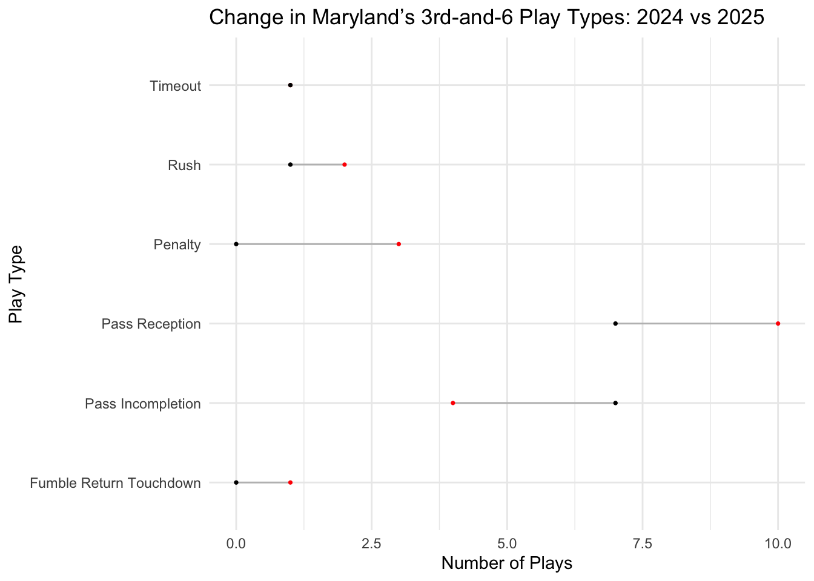

Maryland’s 2025 3rd-and-6 plays show a slight shift toward passing, with pass incompletions up and rushes, receptions, and penalties down compared to 2024, highlighting shifts in offensive tendencies over the season.
Author
Nyla Cherry
Published
October 25, 2025
Code
library(tidyverse)
── Attaching core tidyverse packages ──────────────────────── tidyverse 2.0.0 ──
✔ dplyr 1.1.4 ✔ readr 2.1.5
✔ forcats 1.0.0 ✔ stringr 1.5.2
✔ ggplot2 4.0.0 ✔ tibble 3.3.0
✔ lubridate 1.9.4 ✔ tidyr 1.3.1
✔ purrr 1.1.0
── Conflicts ────────────────────────────────────────── tidyverse_conflicts() ──
✖ dplyr::filter() masks stats::filter()
✖ dplyr::lag() masks stats::lag()
ℹ Use the conflicted package (<http://conflicted.r-lib.org/>) to force all conflicts to become errors
Code
library(cfbfastR)library(ggalt)
Registered S3 methods overwritten by 'ggalt':
method from
grobHeight.absoluteGrob ggplot2
grobWidth.absoluteGrob ggplot2
grobX.absoluteGrob ggplot2
grobY.absoluteGrob ggplot2
Based on this data, Maryland does not typically run on third-and-six, they are more likely to attempt a pass play. Neither season produced an adequate run summary as there wasn’t enough data to work with. Maryland seems to aim to pass a lot more throughout this season with 14 total pass plays or attempts (incompletions) through seven games compared to last year’s 14 across the entire season.
Warning: Using the `size` aesthetic with geom_segment was deprecated in ggplot2 3.4.0.
ℹ Please use the `linewidth` aesthetic instead.

Maryland’s 3rd-and-6 tendencies have shifted slightly in 2025. Pass incompletions have increased, while pass receptions, rushes, and penalties have all declined compared to 2024. The team appears to be leaning more on the passing game overall, despite fewer successful completions, it shows more attempts given that 2025 includes only seven games. I’m interested to see if these trends could still increase over the season.